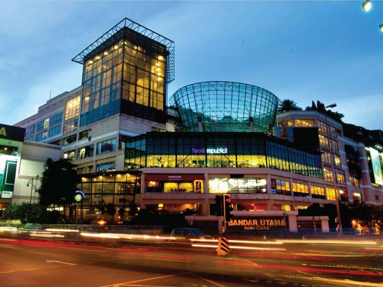

Shopping
One Utama Shopping Mall

Located away from the city centre, but still within the Kuala Lumpur limits, is the expansive 1 Utama shopping mall (fondly known as 1U to locals). Housing over 650 stores along with a smorgasbord of eateries and entertainment outlets, 1U spans over five million square feet and is located in Bandar Utama, a small suburb just off the Lebuhraya Damansara-Puchong.